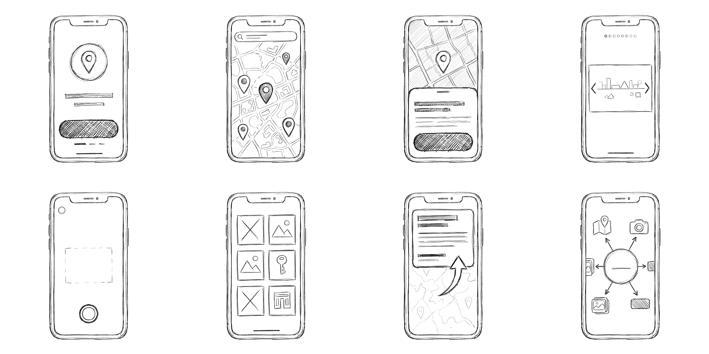
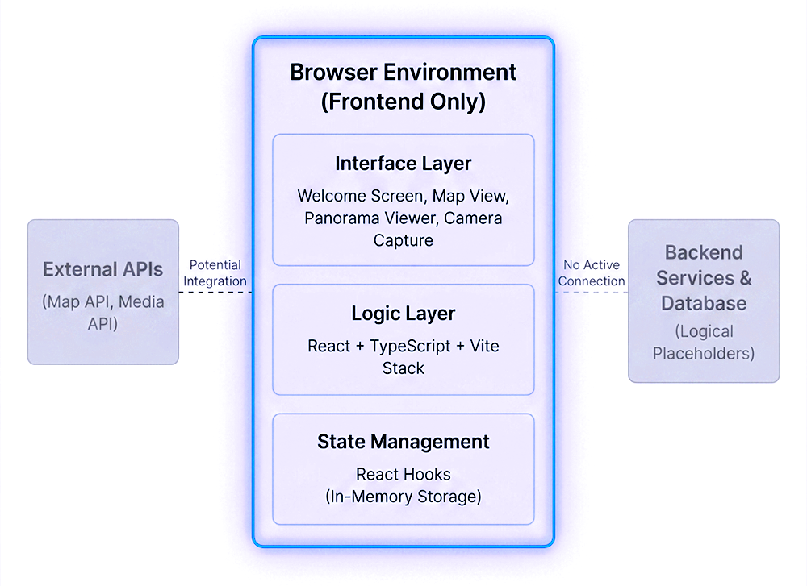
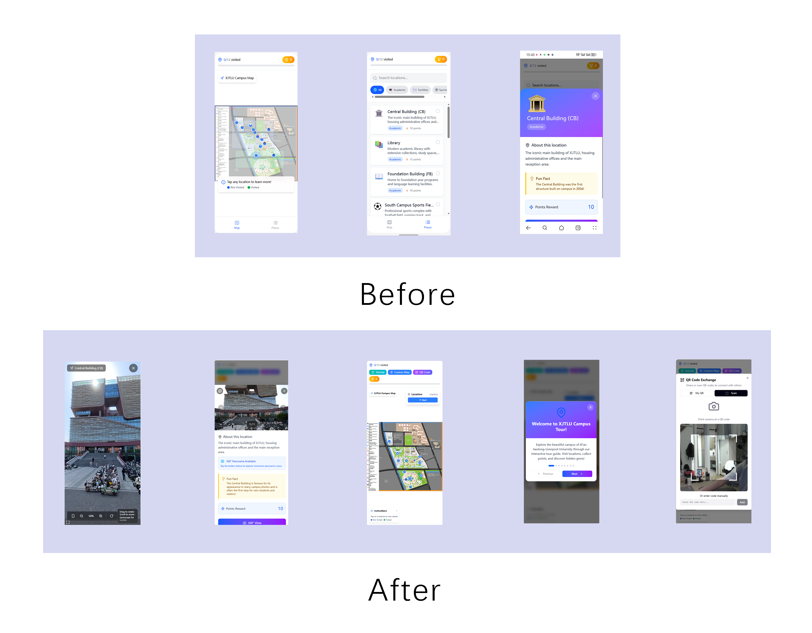

XJTLU Campus Tour
CPT208 Process Portfolio | Group B3-3
Heritage Track
Interactive
Playful
CPT208 Process Portfolio | Group B3-3
This project aims to develop a campus guide website designed specifically for freshmen, prospective students, and visiting guests. The platform helps users quickly become familiar with the campus, view building information, and find the correct routes before arriving or during their first days on campus.
At present, most universities only use traditional 2D maps. These maps can only show approximate locations, but they cannot clearly display what buildings look like, how their internal layouts are organized, or where entrances are located. This becomes especially problematic for connected teaching buildings such as SA, SB, SC, and SD, which have multiple entrances and complex structures. As a result, people often get lost, cannot find the correct entrance, and waste a significant amount of time.
To solve these problems, we upgraded the traditional 2D map by making the platform more intuitive, immersive, interactive, and user-friendly. The system is designed to help users understand the campus more quickly and comfortably while also promoting campus culture more effectively. In addition, it provides a practical new tool to support the development of a smart campus environment.
In the daily operation of universities and the adaptation process of new campus users, freshmen, prospective students, and visiting scholars usually rely on 2D flat maps provided by universities to understand the spatial layout of the campus. However, such traditional navigation methods have significant limitations in practical application.
Firstly, the dimension of information presentation is insufficient. Traditional 2D maps can only provide abstract geographical location relationships, lacking intuitive expression of building appearance, internal spatial structure, and functional layout, making it difficult for users to establish complete and accurate spatial cognition.
Secondly, the efficiency of practical use is relatively low. Some teaching buildings on campus (such as SA, SB, SC, SD, etc.) have multiple entrances and complex connected structures. Even when users arrive near the target building, they still struggle to locate the effective entrance quickly, resulting in problems such as getting lost and directional anxiety.
Thirdly, existing navigation modes lack interactivity and user experience. Users mostly receive information passively and lack willingness to participate and explore actively, making the campus navigation process monotonous and unable to meet the usage needs of young user groups.
Based on the above practical problems, this project proposes a core research question: how to help users perceive the campus space more intuitively and explore the campus more efficiently without increasing the usage threshold?
[1] G. R. T. V. Silva, J. M. R. S. Tavares, and P. M. B. Torres, “Virtual tours as a tool for heritage education
and dissemination,” ISPRS Annals of the Photogrammetry, Remote Sensing and Spatial Information Sciences, vol.
IV-2/W6, pp. 895–902, 2019.
[2] S. Deterding, D. Dixon, R. Khaled, and L. Nacke, “From game design elements to gamefulness: Defining
‘gamification’,” in Proc. 15th Int. Academic MindTrek Conf., 2011, pp. 9–15.
[3] D. Luzzi, E. I. Parisi, M. Ranieri, and G. Tucci, “Interactive and Gamified Educational Virtual Tour for the
Preservation of Tangible and Intangible Rural Heritage,” in *The International Archives of the Photogrammetry,
Remote Sensing and Spatial Information Sciences*, vol. XLVIII-M-9-2025, Proc. 30th CIPA Symp. “Heritage
Conservation from Bits: From Digital Documentation to Data-driven Heritage Conservation,” Seoul, Republic of
Korea, Aug. 25–29, 2025.
[4] A. Bodzin, R. Araujo Junior, T. Hammond, and D. Anastasio, “Investigating engagement and flow with a
placed-based immersive virtual reality game,” presented at the 2021 Association for Science Teacher Education
Int. Conf., Online, Jan. 14–15, 2021.
[5] R. H. Mogavi, B. Guo, Y. Zhang, E.-U. Haq, P. Hui, and X. Ma, “When gamification spoils your learning: A
qualitative case study of gamification misuse in a language-learning app,” in Proc. 9th ACM Conf. Learn. Scale
(L@S '22), 2022, pp. 175–188. https://doi.org/10.1145/3491140.352827
This group represents the primary users of the project. They are unfamiliar with the campus environment and therefore have strong needs for information access and spatial understanding.
This group usually stays on campus for a short period and has limited prior knowledge of the environment, relying more on navigation tools to quickly obtain necessary information.
This group does not directly use the system, but they have an influence on its promotion and the accuracy of its content.
Although this group already has a certain level of familiarity with the campus, they may still get lost in complex buildings or in less frequently used areas.


Campus tour can be done online in advance:
Users can learn about the campus environment and building information through the website without having to be on-site, reducing unfamiliarity and establishing spatial cognition in advance.
Simple, beautiful, and user-friendly interface:
Utilizing clear and intuitive interaction design, it reduces the learning cost and allows new users to quickly get started and efficiently obtain information.
Enhanced exploration fun:
Through gamification mechanisms such as check-ins and achievements, it motivates users to actively browse more buildings, increasing participation and usage duration.
More realistic campus map for immersive tours:
Combining maps with 360° panoramic content, it improves the accuracy of spatial reconstruction, providing users with an immersive experience close to a real visit.
Interview 1
Interview 2
Interview 3

Identify buildings through mobile phone cameras, overlay historical information and virtual elements.
GPS based map navigation, accompanied by pre recorded audio explanations.
Design the campus tour as a treasure hunt game, unlocking historical knowledge by completing tasks.
Reason for selection： The final choice for this project is Option Three: Gamified
Interactive Tour. The key considerations were as follows:
Technical Feasibility
Compared to the AR technology in Option One, the gamified tour didn't need complex real-time image recognition, high
computing power, or accurate positioning support, so it was much easier to develop. Basic web map functions,
task-triggering logic, and QR code scanning were all that was required. This approach fitted the project's timeline
and resources better, allowing for quicker development, testing, and deployment.
User Experience and Alignment with Project Goals
Figma Link: https://mild-needle-33273463.figma.site

Live URL: https://xjtlu-tour.vercel.app/
| Team Member | Student ID | Specific Contribution |
|---|---|---|
| Yufeng Wang | 2363248 | Initial Portfolio development; GitHub library initialize; System low-fi and high-fi prototype design and coding; Live website deployment; Video filming assistant |
| Ningruo Wang | 2362941 | Survey questionnaire design, distribution, and data analysis; Poster and portfolio copywriting; Campus building and street view photography; Initial user feedback collection filming; Filming for Video Part 3 (Concept) and Part 5 (Impact) |
| Shengyuan He | 2361889 | Poster design/layout; Copy proofreading & revision; Portfolio content refinement; Chinese-English translation; Interview video shooting |
| Xiantong Zeng | 2362360 | Project leadership; Product development guidance; Poster image optimization, printing and exhibition; Image generation model prompt engineering development; Portfolio development optimization and layout; Portfolio copy and image editing and generation; Panoramic image shooting and post-processing; Video shooting guidance; Video copy editing; Video production |
Test with three real users using Alpha version, including task completion testing, user satisfaction survey, and semi-structured interviews.

This project is not only a functional campus navigation tool but also has certain social and ethical impacts,
primarily reflected in campus culture dissemination, community connection, and privacy protection.
Promoting the Preservation of Campus Culture (Cultural Preservation)
By integrating building introductions, historical background, and visual content into the map, this project
systematically presents information that was previously scattered, allowing users to gain a more comprehensive
understanding of campus culture.
For new students, prospective students, and visiting scholars, this "visual + interactive" navigation approach helps
to:
1. AI Tools Used
Trae AI and Figma were used for web development. Claude Opus 4.6 and Qwen3 Max Thinking were used for HTML coding and
prompt engineering. DeepSeek V3 and V4 were used for copywriting optimization and
translation. Google's Nano Banan Pro and Nano Banana 2 were used for sketching, project planning diagrams, and most
importantly, panoramic image processing.
2. Development Phase & AI Application
Trae AI was used for prototyping, core development, type definitions, 360° view integration, map refactoring, QR
scanning, and debugging. Claude Opus 4.6 and Qwen3 Max Thinking were primarily used for prompt crafting and HTML code
writing. DeepSeek V3 and V4 handled copywriting optimization
and translation. Google Nano Banan Pro and Nano Banana 2 were used to generate sketches, project planning diagrams,
and critically, to process panoramic images. Deployment to Vercel was manual.
3. AI Contribution Summary
Trae AI generated most frontend components and feature logic. Claude Opus 4.6 and Qwen3 Max Thinking focused on
prompt writing, code generation, and project analysis. DeepSeek models handled copy optimization and translation.
Google Nano Banan tools produced visual planning materials including sketches and diagrams, with a key role in
panoramic image processing.
4. Human Oversight & Quality Control
All AI-generated code and prompts were manually reviewed. Testing was performed manually on Android and iOS.
5. Limitations & Workarounds
AI poorly recognized image-based location data, solved by a human-defined Location type system. iOS gyroscope
permission issues were resolved with manually added code.
6. Ethical & Practical Notes
No confidential data was shared with AI tools. AI served solely as a productivity aid. All third-party libraries and
AI-generated outputs were vetted by the developer.